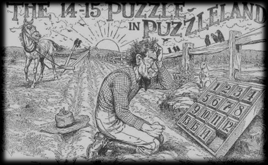

14/15 bulmacası, Amerika’da bir postane çalışanı olan Noyes Palmer Chapman tarafından 1880 yılında icat edildi. Ünlü bir bulmaca mucidi olan Sam Loyd tarafından popülerleştirildi. 16’ya 16 bir kare ızgarada 15 karo hareket ettirilerek bir sıraya sokulacak.
Bu oyunda hayrete düşüren taraf, herhangi bir başlangıç durumu için problemin illa ki bir çözümünün olmadığı. Örneğin, düzgün sıralanmış 15 karoda sadece 14. ve 15. karoların yerleri değiştirildiğinde karoları sıralamanın olanaksız olduğu ispatlanabilir.
|
 |
Bulmacanın orijinal reklamı.
Çözülemez bir başlangıç sıralamasını gösteriyor.